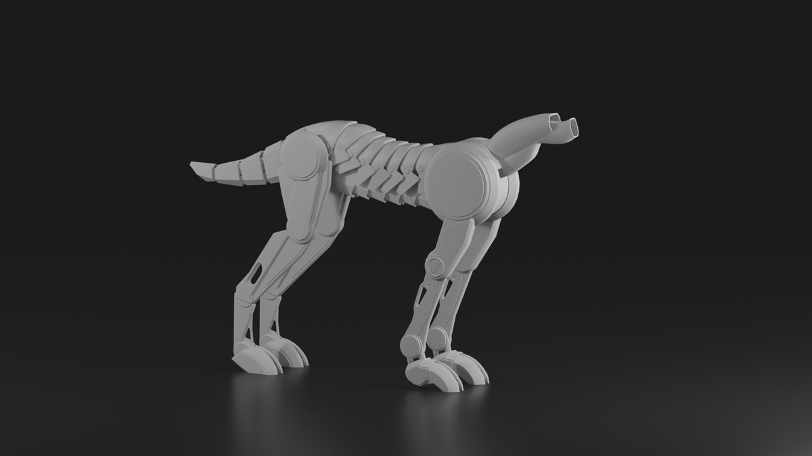
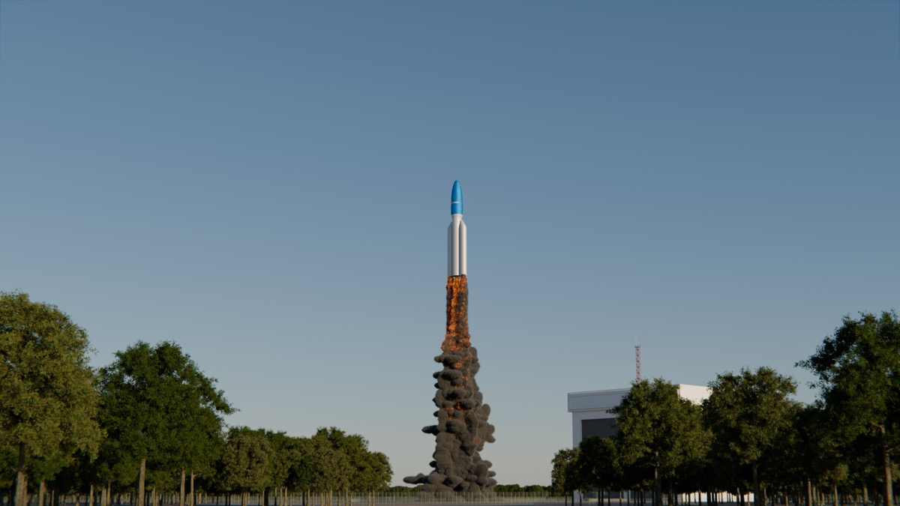
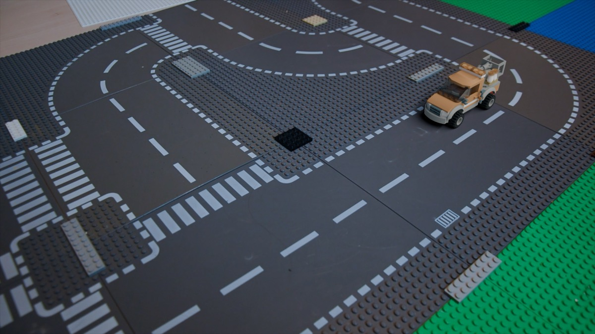
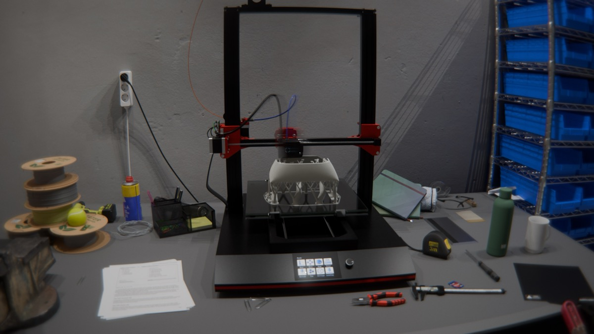
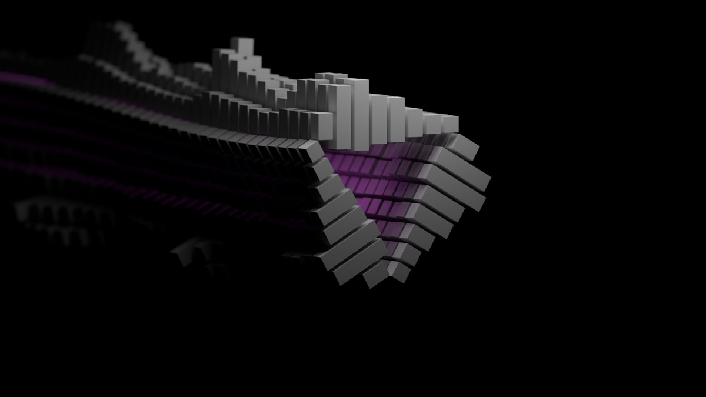
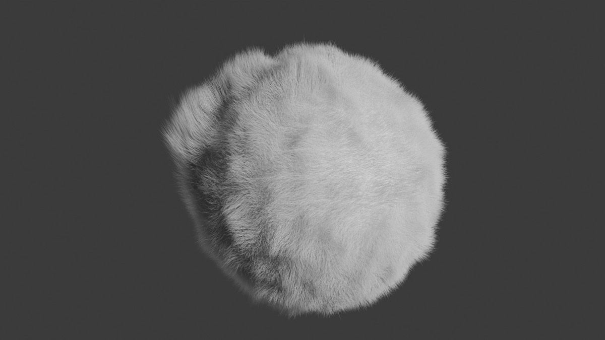
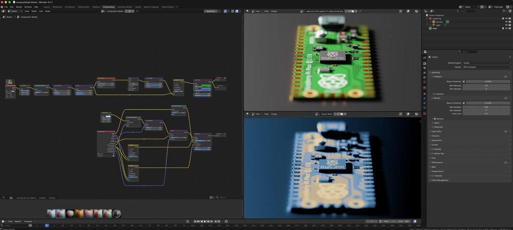
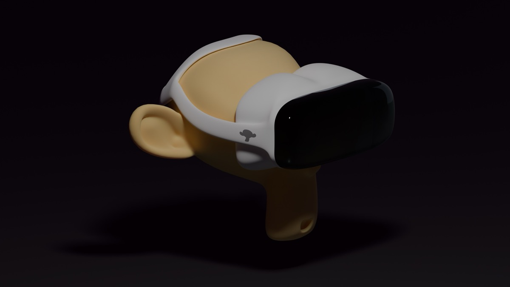
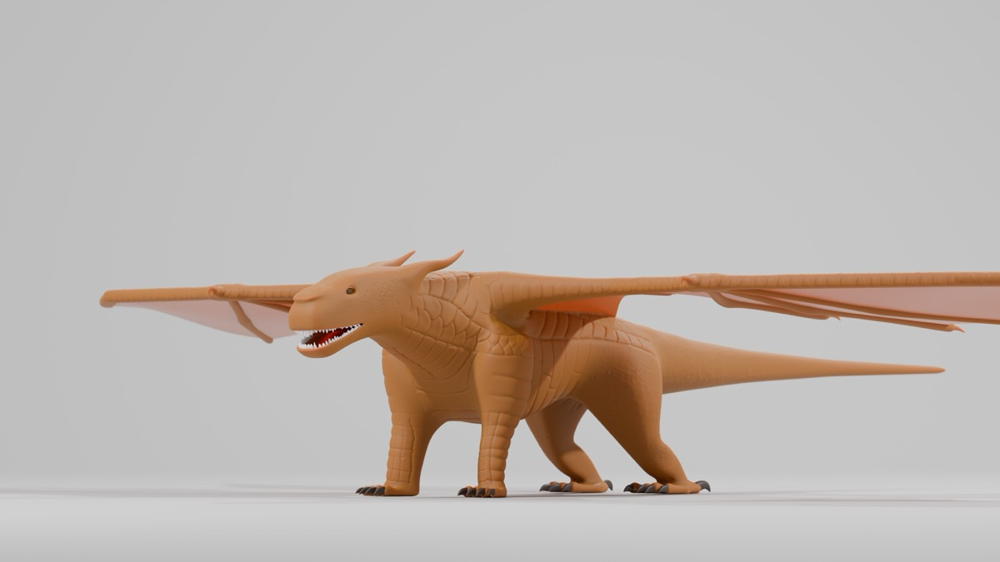

Our Projects
On this page we'll show you some of our projects we have done so far
Wardog-chassis
This was a hardsurface moddeling work inspired by the art of Syd Mead. In the picture the head is still missing. One interesting thing about the modellel is that I didn't find any other "Wardog-chassis" in the Web. I thought that somebody had to modell this as well, but it seems like I was wrong.

Rocket Launch
For this image I modeled the rocket and the whole hangar first. Then I made a smoke simulation for the rocket liftoff. Finally I added trees in the forground and used my own fence generator for the spaceport.

Motion Tracking
This image looks at first like a normal image. Some little Lego groundplate, a orange car, and some parts holding everything together. But this is acctually CG. I shoot the background footage with a camera in real life, tracked the camera motion with Blender, assemebled the car (not in Blender, I used LeoCAD for that) and composed it afterwords.

3D-Printing
We had an art project in school and should build a model boat. This was one part of the main front. We 3D-printed it I tried to recreate this printing process as good as I could. So I modeled the part in Blender (That was difficult! I know that there might be smarter ways of doing it, but I grease-penciled the rough form and then it took days to make it has a good topology.)

Simple Audio visualiser
This was make with a tutorial of Polyfjord. It shows the music over some time with a cool animation. Therefor I used Polyfjords simple audio visualiser Add-On that converts sound waves to animation-properties.

Fur
Just playing around with fur.

Sculpting Example
This is a wonderfull example of sculpting. You can clearly see the text written on the object with a "brush". This function tries to combine drawing and 3D (succesfully). It alows to draw ontop of objects ,as long as they have enough subdividions to display it, with various brushes. These include ones that smooth ,simply add on top and erase, to name a few. Because this is only a screenshot you can also see the Blender inviroment in wich this was created.

Compositing Example
This is another great example of a Blender feature, the compositing. Compositing gives you full controll over how the image looks, after all the objects are placed and the first image was rendered out (other than in photography this does not include positioning). On the left we can see a so called node tree wich exactly tells the program how to composit. We could for example simulate sensor noise or add a bit of chromatic abberation. Compositing plays a (maybe even the) role in setting the mood of a render, expressing a style, make it look realistic and gives you a lot of controll.

Tutorial and own imagination
The glowing glass effect of the flowers you can see where made with a tutorial and because I needed to put them to use I downloaded a buch of free 3D modells and put together this scene. I wanted some chinese inspired lanterns in the sky, so I looked for some and the only good ones where expensive. Because I knew they didn´t need to be very detailed I quickly transformed a cube into the corect shape and used my knowledge to create this simple tranperant, darkening towards the edges shader. Boom in 3 minutes I partially recreated an assit that I could have paid for. This scene is memorabile to me because this remoddel was my first and I felt comfortabile during the making. All my prodjects before I had some issues, but not this litle remoddel.
Monkey Vision PRO
Inspired by the apple vision pro, the Monkey Vision PRO was a personal project. I Used the default blender Monkey called suzanne made a semi-stylised VR-headset.

Mudwing
I love the Wings of fire novels! So I decided to model one of the dragons. The dragonwas inspired by the charakter Clay from the books. All of the work was done in Blender, but I used PureRef for the reference images. The project is not finished yet. Right now, I'm trying to rig the dragon (adding bones to be able to animate it later), but that's quite complicated. The skin was made procedurally with a custom shader. To make those bigger dragon-scales I sculpted a lot.
